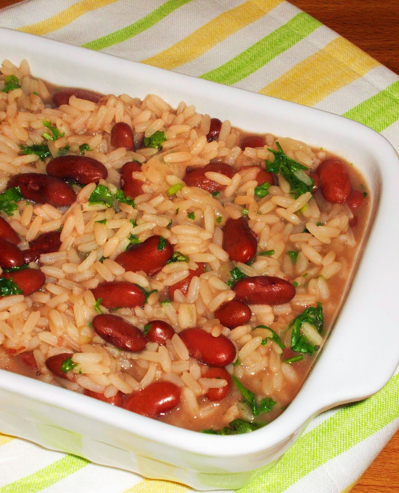

"Arroz de Feijao" - Portuguese Bean Rice

Description
Arroz de Feijão is a traditional Portuguese rice dish which combines kidney beans, peppers, onions, garlic, passata, and short grain rice. This delicious rice is perfect for when you want a side dish that's more elaborate than your usual white rice. Although typically served with fried fish, it goes well with everything, and it's absolutely delicious on its own too. For the vegetarian, it's also one of the few Portuguese dishes that's naturally vegetarian.
Ingredients
- 1 Small Red Pepper – diced
- 1 Large Onion – diced
- 5 Garlic Cloves – minced
- 2tbsp Extra Virgin Olive Oil
- 2tbsp Tomato Concentrate
- 200g Passata
- 400g Kidney beans – cooked, drained
- 1 Bay Leaf
- 80ml Dry White Wine
- 400g Short Grain Rice
- 1.5l Vegetable Stock
- Fresh Thyme
- Salt
- Pepper
- Fresh Parsley
Steps
- Place a large pot over medium heat, add in the olive oil, diced onions, and peppers. Let it sweat for about 5 minutes or until it softens. Push them to the side, add in the minced garlic, and cook for another minute.
- Stir in the passata and tomato concentrate, let it cook for 2 minutes.
- Add in the kidney beans (pre cooked and drained), the rice, and a bay leaf, sautée for another 2 minutes.
- Deglaze with the white wine, once the alcohol evaporates, add in the vegetable stock. Season with black pepper and salt to taste, then bring it to a boil.
- Reduce to a simmer, let it cook undisturbed over low to medium heat for about 30 minutes or until the rice is cooked through but still moist.
- Serve with lots of chopped fresh parsley, enjoy!
Home